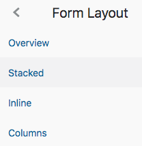

Building Webviews for Local Deployment to Oracle Digital Assistant using Oracle JET
Tutorial by Frank Nimphius, Oracle
May 2019, Oracle Digital Assistant version 19.1.5
Natural language conversations are, by their very nature, free-flowing. But they may not always be the best way for your skill to collect information from a user. For example, when entering credit card or passport details, users need to enter this information precisely. In addition, information like passwords or secrets should not be displayed in the messenger conversation history. To help with these kinds of tasks, your skill can call a webview app.
Using the System.Webview component in Oracle Digital Assistant, you can integrate external and locally deployed web applications into your bot conversations.
In this tutorial you learn how to build single-page applications (SPA) with Oracle JavaScript Extension Toolkit (JET) and how to deploy them to the local webview container in Oracle Digital Assistant skills.
Before You Begin
What you going to build
Before you start, it may be good to know what you are going to build. The sample web application for this tutorial is part of a travel booking skill. As shown in the images below, the bot conversation completes a travel booking using a web form. The web form you see is the webview you are going to build using Oracle JET. The web view displays the data entered by the user during the bot conversation and allows changes to the data provided as well as setting a return date.
User provides information about the city to depart from (Paris).
She then is prompted for a departure date. For this she inputs Dec 02 2019. Not shown in the image is that all entered data is validated against entities.
Finally, the user selects a destination airport (San Francisco), after which she is prompted for pressing the Open Oracle Travel button to finish the booking in the webview.
The webview opens in a separate browser tab, listing all previously provided data. The user sets the return date to Dec 19 2009 and presses the Submit button.
The form data is sent back to the bot for confirmation in the conversation dialog.
Prerequisite
To create webviews for deployment to Oracle Digital Assistant skills, you don't have to use Oracle JET. You can also build SPA application using third-party JavaScript frameworks such as Angular, React, and others. For this tutorial however, you will use Oracle JET.
The following pre-requisites must be met for you to follow the instructions in this tutorial:
What Do You Need?
You need to have access to Oracle Digital Assistant 19.1.5 or later.
Node.js and NPM (Node Package Manager) must be installed on your local machine. If you don't have Node.js installed yet, please install it from https://nodejs.org/en/download/ .
Unless you have a JavaScript IDE installed that you feel comfortable using, for this tutorial we suggest installing Microsoft Visual Studio Code https://code.visualstudio.com/download) IDE. Microsoft Visual Studio Code is also used in the instructions and screenshots of this tutorial.
Getting Started with Oracle JET
Oracle JET is a collection of open source JavaScript libraries along with a set of Oracle contributed JavaScript libraries for building client-side applications. Like Angular or React, Oracle JET is based on modern JavaScript, CSS3 and HTML5 design and development principles that promote modular application development.
This tutorial does not require any knowledge of Oracle JET. In this section, you will learn enough to get started with Oracle JET.
Ensure you have a working Internet connection.
Open a command line (Windows) or terminal window (Mac).
If your machine is located behind a proxy server, use npm config or disconnect from the proxy before installing Oracle JET command line. To use npm config, type
npm config set proxy your-http-proxy-server-URL:proxy-port
npm config set https-proxy your-https-proxy-server-URL:proxy-port
To install the Oracle JET command line interface (CLI), type
On Windows npm install -g @oracle/ojet-cli On Mac sudo npm install -g @oracle/ojet-cli
Type ojet help to verify the success of your installation.
Building the Single Page Application (SPA)
In this tutorial you are building a web application using Oracle JET. Note that Oracle JET can also be used to build hybrid mobile applications for Android and iOS.
Still in the terminal window or on the command line, navigate to a folder to host the web application root folder.
Create a new web application named tutorialTravelBooking by typing the following command
The command creates a new single page web application based on the Oracle Jet basic template.
Navigate into the tutorialTravelBooking application folder by typing
cd tutorialTravelBooking
Next, type
ojet serve
The ojet serve command builds and runs the web application project. As a result, a browser window or tab opens displaying the following page:
The opened page shows the content of the basic template in the Oracle JET application you built. In the next section, you are going to customize this view.
Close the opened browser window or tab.
on the command line, or in the terminal window, press
CTRL+C
to exit the ojet server command.
Starting Oracle JET Application Development
In this section you will learn how to open the Oracle JET application in Microsoft Visual Studio Code for development and testing and remove content of the Oracle JET basic template that is not needed for the webview you are going to build.
Open Visual Studio Code IDE, or whatever JavaScript IDE you prefer using instead.
In Visual Studio Code, select File -> Open from the menu.
Navigate to and select the tutorialTravelBooking folder on your local computer's file system and press the Open button.
In Visual Studio Code, expand the src node the and the js node therein.
Select the appController.js file entry to open it for editing.
Change line 20 from
self.appName = ko.observable("App Name");
to
self.appName = ko.observable("Oracle Travel");
Remove lines 21 and 22.
Select File --> Save from the menu to save the changes.
Select and open the index.html file contained in the src node.
Delete lines 59 - 73.
Select File --> Save from the menu to save the changes.
At the bottom of the Visual Studio Code IDE, select the TERMINAL tab as shown in the image below.
Note: If you don't see the "PROBLEMS | OUTPUT | DEBUG CONSOLE | TERMINAL" console displayed in above image, choose View --> Terminal from the top menu to display it.
In the opened TERMINAL window, type
ojet serve
to build the project and launch it in a web browser.
Note: If you get the error "... Uhoh. Got error listen EADDRINUSE: address already in use :::35729 ..." then go to the terminal window where you first entered the ojet serve command and type CTRL-C.
The embedded server in Oracle JET is started such that it immediately reflects any changes applied to the web application. To try this out, typeHello World into line 62 before the </div> element and choose File --> Save from the Visual Studio Code IDE top menu.
Check your browser to see the "Hello World" string appearing in the page body.
Remove the "Hello World" string.
Still in the index.html file, find
<title>Oracle JET Starter Template - Web Basic</title>
and replace it with
<title>Oracle Travel</title>
Find and remove the following markup near the bottom for the index.html file:
Select the Terminal window in Visual Studio Code and use CTRL+C to stop the ojet server process.
Programming The Webview in Oracle JET
Oracle JET is based on a Model View ViewModel architecture. In simple terms, this means that the client and UI logic developed in JavaScript is not stored in the HTML document rendering of the user interface, but in a separate JavaScript file (ViewModel).
DISCLAIMER: The aim of this tutorial is not teach Oracle JET best practices. To keep tutorial instructions simple, intentionally, you are going to edit all UI markup in the index.html file and code all client and UI logic to the main.js file. Oracle JET best practices would require this to be built in a separate view and viewModel file because single-page application does not mean "single HTML file".
Editing index.html
In this part of the tutorial you are going to create the data input form in the index.htmlfile
If not still open, open the index.html file in MS Visual Studio Code.
Place the mouse cursor in front of the </div> element in line 62 and press the enter key to create a new line. After this, line 62 should be empty and the </div> moved into line 63 as shown in the image below.
On the "Oracle JET Developer Cookbook" page, click the Layout & Nav link.
Select the Form Layout tile.
Click on the Stacked menu item entry in the left side menu.

Select the demo.html tab below the "Stacked" header.
Copy the <oj-form-layout id="form-container"> markup to the clipboard (only this line).
Select the demo.js link and notice the ojs/ojformlayout component reference in the ViewModel require function. Oracle JET components usually have a component tag and an associated JavaScript class that later (not now) needs to be added to the main.js file for the component to work.
Go back to the index.html file you have opened in Visual Studio Code.
Place the cursor into line 62 (the empty row you created) and paste the <oj-form-layout id="form-container"> markup from the clipboard.
Create 2 new line below line 62.
Add the closing tag </oj-form-layout> into line 64.
Open the indexhtml_code_listing.txt file and copy its content to the clipboard (CTRL+A, followed by CTRL+C (Windows), CMD+A, followed by CMD+C (Mac)).
Paste the clipboard content to the index.html file. Make sure the code is added to the empty line between the <oj-form-layout id="form-container"> and </oj-form-layout> tags. (its line 63 in the image above)
Save the index.html file.
As a proof that you did well, click the
element on line 62 so it appears highlighted.
Scroll down in the index.html file until you see the matching </oj-form-layout> in line 99. If this tag is highlighted too, then the index.html file is well formatted. If the matching element is not highlighted, ensure you did not miss parts of the HTML to copy & paste into this file.
What you just did: In this part of the tutorial, you created the single-page application HTML form to display the travel information that the user specified during the bot conversation.
You learned how to use the Oracle JET cookbook to create the form layout and completed the form with markup that you copied from the provided indexhtml_code_listing.txt file.
Note that the "ojet" components copied to the index.html file require a JavaScript class reference in the required function of the main.js file. This will be dealt with in the next section.
Editing main.js
The main.js file is the ViewModel of index.html and will hold the client logic, as well as the UI component references and values.
Getting ready
In Visual Studio Code, open the main.js file located in the src/js folder by clicking on it.
Copy the whole content to the clipboard(CTRL+A followed by CTRL+C (Windows), CMD+A followed by CMD+C (Mac)).
In MS Visual Studio Code, click into the opened main.js file.
press CTRL+A, followed by CTRL+V Windows, or CMD+A, followed by CMD+V (Mac), to replace the current content with the content in the clipboard.
Save the file.
What you just did: For dynamic data binding to work between the ViewModel class and the UI components in the index.html file, the ViewModel needs to reference JavaScript object representations of the Oracle JET UI components. The object references are added as arguments to the require (...) function (line 47). By example of the <oj-form-layout id = "form-container"> component in the previous section, you learned how to get the UI component class name for a UI component from the Oracle JET cookbook.
To shorten the time to create the single-page application, and to focus on the skill integration part, you copied the Oracle JET-specific code from a provided text file. If you are interested, code comments are added to the main.js content that explain what specific code is doing. Next, you are implementing the code required to read from input parameters passed by the skill and to call back into the skill to return data from the web application.
Adding code to interact with the Oracle Digital Assistant Skill
Single-page applications must read the input parameters sent by the Oracle Digital Assistant skill and call back to the skill to pass control and return data. For applications that are locally deployed and hosted in a skill, Oracle Digital Assistant passes input parameters as a JavaScript object when launching the app as a webview.
In Visual Studio Code, navigate to line 58 of the main.js file.
Replace the TODO string with the following code:
let webviewParameters = window.webviewParameters != null ? window.webviewParameters['parameters'] : null;
Note: window.webviewParameters is a JavaScript object injected to the single page application when the application is launched by the System.Webview component.
Note: The window.webviewParameters['parameters'] call returns an array of JSON objects in the format of [{key:"keyname", "value": param_value}, {...}]. The helper function above makes it easy to read a specific named input parameter.
Note: In the tutorial sample, the skill sends three input parameters to the Oracle JET application: origin, destination and the start date. The code lines above look for the "origin" and "destination" parameters. If they cannot be found, then they are defaulted to 'CDG' and 'SFO'. The ko.observable() function is from "Knockout" the data binding library used by Oracle JET. Using Knockout, data changes in the ViewModel are updated in the web UI, and changes in the web UI are written to the ViewModel.
>Go to line 89.
Replace the TODO string with the following code:
var webViewCallback = getWebviewParam(webviewParameters, 'webview.onDone', null);
Note: Beside of the input parameters, the incoming payload from the skill contains the webview.onDone property that holds the callback URL the web application calls in an Ajax call to return data to the skill and to pass control so the skill conversation resumes.
>Go to line 101.
Replace the TODO string with the following code:
let dateInRequest = getWebviewParam(webviewParameters, 'departureDateInMS', null);
Note: This code line sets the start date. The date is sent from the skill in milliseconds.
Go to line 104. Notice how the date in milliseconds gets converted into a format that can be used with the Knockout binding for the Oracle JET input date component.
Go to line 120.
The code in lines 120 to 165 handles the call back to the skill when either the submit or the cancel button is pressed:
Code line
Description
126-132
Code constructs the data to be returned to the skill. You use the property names later in the dialog flow to access the returned data values.
137
To make it easier for the skill designer to tell whether a user submitted the form, or pressed cancel, the sample returns a "status" property. This is not mandatory but considered good practice.
139
JQuery Ajax call to the callback URL. This passes the data object as a payload as well as control back to the skill.
152-161
The code closes the opened browser tab of webview after a short delay that allows the Ajax call to complete.
What you just did: Completing this part of the tutorial added the code to read from the incoming skill payload and to update the UI components with the data. You also learned how to return control and the application response back to the skill using a JQuery Ajax call.
A First Test
Though the Oracle JET application is not yet ready to be called from Oracle Digital Assistant, you can test it.
In Visual Studio Code, ensure the index.html and the main.js files are saved.
Select the Terminal. If not open, choose View --> Terminal from the menu.
Type ojet serve and press the enter-key.
The web application should display as shown in the image below.
What if you see a blank page instead of a form? If you don't see a form but a blank page then either the code added to index.html or the edits in main.js have errors or are malformed. To get you unlocked, copy and paste the content from index.html.txt and main.js.txt into your versions of the two files, replacing your file contents. Save the two files. The browser should now display the form as shown in the image above.
Press the Submit button to close the browser tab.
Select the Terminal window in Visual Studio Code and press CTRL+C to stop the ojet server process.
Deploying the Oracle JET App to into a Package
To deploy a single-page application to the local web container in Oracle Digital Assistant, you first need to generate a release version of the application that uses minimized versions of dependent libraries. Finally, you pack the application version into a compressed '.tgz' archive.
Select the Terminal. If not open, choose View --> Terminal from the menu.
Type the following command into the Terminal window and press enter
ojet build --release
Note: The command will take some time to complete.
In the Terminal window, type
cd web
To create the compressed '.tgz' package, type
tar -zcvf tutorialtravelwebview.tgz *
What you just did: Following the instructions in this section you created a compressed archive "tutorialtravelwebview.tgz" for deployment to the web container in Oracle Digital Assistant. The ".tgz" file is located in the "tutorialTravelBooking/web" folder.
Importing the Sample Skill
A sample skill is provided for this tutorial, allowing you to test the webview application you just created.
Go to <your_digital_assistant_cloud_instance>/botsui.
Select the "hamburger" icon at the top ().
Expand the Development menu group and select the Skills entry.
Again, click on the "hamburger" icon to close the side menu ().
In the filter field above the New Skill tile, type OracleTravelTutorial.
If the skill does not exist, download the OracleTravelTutorial(1.0).zip skill and use the Import Skill button () to add it to your cloud instance.
Once imported, find and clone the skill by selecting the Clone context menu option.
When prompted, add a unique string to the Name field of the skill, for example: <your_initials>OracleTravelTutorial, and provide information for the other input fields.
Ensure you select the Open cloned skill bot afterwards select box before you press the Clone button.
In the opened skill, click onto the dialog flow builder icon in the left side menu ().
In the opened Dialog Flow editor, navigate to line 79.
Notice the System.Webview component configuration, especially the service, sourceVariableList and the variable properties.
The service property references the webview to launch. Notice the "oracletravelweb" string, which is the name you will provide later to the uploaded Oracle JET application.
The sourceVariableList property references the names of variables that will be sent as input parameters to the webview. The name of the variable becomes a "key" in the message payload.
The variable property holds the return parameters sent from the Oracle JET webview application to the skill.
What you just did: In this section you imported the sample skill to test your webview in Oracle Digital Assistant. In the next section you learn how to deploy and register the Oracle JET SPA application as a webview using the local container.
Uploading the Oracle JET Application to the Skill
In this section you will upload the tutorialtravelwebview.tgz package to the local web container in the skill to make it available for launch in the context of the bot conversation.
In the skill, navigate to the component registration page by selecting the Components icon in the left side toolbar ().
Select the Webview tab.
Press the + Service button.
In the opened Create Service dialog, set the Name field value to oracletravelweb, which is he name referenced in the System.Webview "service" property.
Provide a short description.
Keep the Service Hosted setting selected as is.
Use the Upload a webview component package file (.tgz file) link to upload the tutorialtravelwebview.tgz archive file, or drag and drop the file into the Package File field.
Note: The tutorialtravelwebview.tgz file was saved in the tutorialTravelBooking/web folder.
Press the Create button.
The deployment may take a few seconds to complete. When completed, you see a confirmation screen as shown below:
Testing the Skill
Last but not least, let's test your webview application in the context of a skill conversation.
Select the conversation tester icon in the left side menu ().
Type Hi into the Message field and press the enter-key.
Choose Paris from displayed list.
When prompted for a departure date, type Dec 12 2019.
In the second list displayed, select Munich.
When prompted to press the Open Oracle Travel button, click on the button to launch the Oracle JET application you built and deployed. The UI you see is generated by the System.Webview component.
In the opened browser tab, notice that the web form shows the previously selected information as well as the start date of Dec 12 2019 .
Use the web form to change some of the displayed values.
When done, press the Submit button.
You should see a confirmation message as shown in the image below. In the image you see that the web form was used to change the departure airport to SFO, the destination to LHR and that it set the return date to be different from the departure date.
Note: You may wonder how skill designers can learn about the response payload that gets returned from a web view, assuming the skill designer and the SPA application developer are two different persons.
The embedded conversation tester can help you with this. You first need to run and complete the web application. The System.Webview component has its variable property pointing to a variable of type string. In the sample skill, this variable name is "webviewresponse".
If, in the tester's "Variables" section, you expand the "webviewresponse" variable node, you see the return payload key names as well as their associated values. The tutorial sample apparently returned the "returnDate" and "departureDate" in milliseconds and the "origin" and "destination" as airport codes. In addition, it send a "status" key that indicates whether the user clicked the "Submit" button in the web form or cancelled it.
Trouble shooting: If no response is returned to the skill, try again. The web application closes the browser tab after 500 milliseconds. Chances are that this is too quick so that the response is not returned. If this is the case for you and if rerunning the conversation does not help, then you can change the delay after which the browser tab is closed by editing line 159 in the main.js file.
Download the completed app: You can download the completed Oracle JET component, as well as a ready-to-use skill that has the webview configured from here: localwebview_complete_solution.zip.
Download and extract the ZIP file and import the skill contained in the "skill" folder to Oracle Digital Assistant.
The webview_src folder contains the completed Oracle JET project. To use the Oracle JET project, you need to open a terminal window and navigate into the tutorialTravelBooking folder. Type npm install to install the Node.js dependencies.
 Building Webviews for Local Deployment to Oracle Digital Assistant using Oracle JET
Building Webviews for Local Deployment to Oracle Digital Assistant using Oracle JET Before You Begin
Before You Begin Getting Started with Oracle JET
Getting Started with Oracle JET Building the Single Page Application (SPA)
Building the Single Page Application (SPA) Starting Oracle JET Application Development
Starting Oracle JET Application Development
 Note: If you don't see the "PROBLEMS | OUTPUT | DEBUG CONSOLE | TERMINAL" console displayed in above image, choose View --> Terminal from the top menu to display it.
Note: If you don't see the "PROBLEMS | OUTPUT | DEBUG CONSOLE | TERMINAL" console displayed in above image, choose View --> Terminal from the top menu to display it.
 Programming The Webview in Oracle JET
Programming The Webview in Oracle JET Deploying the Oracle JET App to into a Package
Deploying the Oracle JET App to into a Package Importing the Sample Skill
Importing the Sample Skill
 Uploading the Oracle JET Application to the Skill
Uploading the Oracle JET Application to the Skill